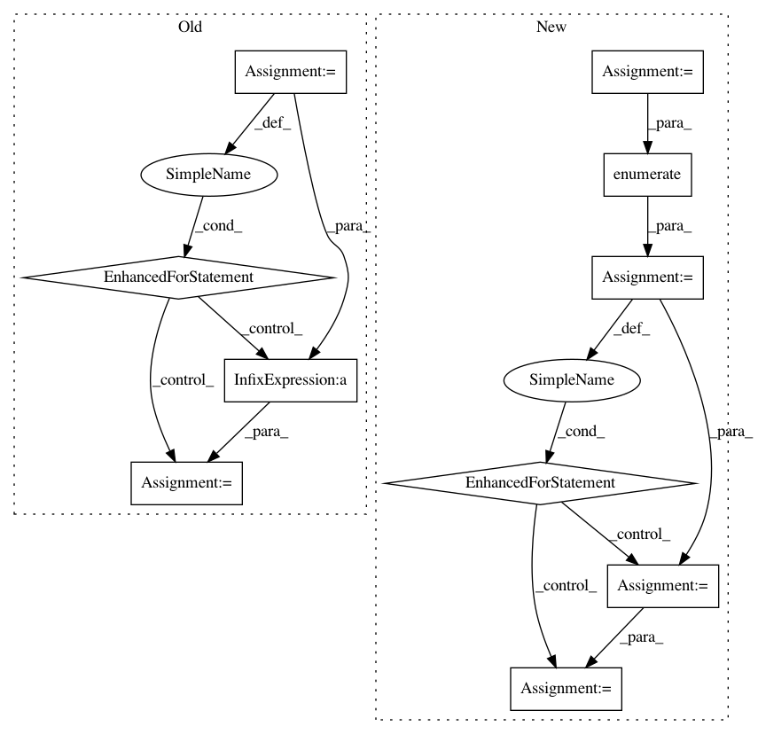

3df2eaf74d8f2299ca05e3e98cab5bf89dafc249,cnn_visualisation.py,,preprocess_image,#Any#,91
Before Change
stds = [0.229, 0.224, 0.225]
preprocessed_img = img.copy()[:, :, ::-1]
for i in range(3):
preprocessed_img[:, :, i] = preprocessed_img[:, :, i] - means[i]
preprocessed_img[:, :, i] = preprocessed_img[:, :, i] / stds[i]
preprocessed_img = \
np.ascontiguousarray(np.transpose(preprocessed_img, (2, 0, 1)))
preprocessed_img = torch.from_numpy(preprocessed_img)
preprocessed_img.unsqueeze_(0)
After Change
// Convert to np array
im_as_arr = np.array(PIL_img, dtype=np.float)
// Transpose to obtain D-W-H
im_as_arr = im_as_arr.transpose(2, 0, 1)
// Normalize the channels
for channel, _ in enumerate(im_as_arr):
im_as_arr[channel] /= 255
im_as_arr[channel] -= mean[channel]
im_as_arr[channel] /= std[channel]
// Convert to float tensor
im_as_ten = torch.from_numpy(im_as_arr).float()
// Add one more channel to the beginning. Tensor shape = 1,3,224,224
im_as_ten.unsqueeze_(0)
// Convert to Pytorch variable
In pattern: SUPERPATTERN
Frequency: 3
Non-data size: 10
Instances
Project Name: utkuozbulak/pytorch-cnn-visualizations
Commit Name: 3df2eaf74d8f2299ca05e3e98cab5bf89dafc249
Time: 2017-10-24
Author: utku.ozbulak@gmail.com
File Name: cnn_visualisation.py
Class Name:
Method Name: preprocess_image
Project Name: NifTK/NiftyNet
Commit Name: c8b28432a637a780eed96547260722ff3dede57e
Time: 2017-10-04
Author: wenqi.li@ucl.ac.uk
File Name: niftynet/engine/sampler_selective.py
Class Name:
Method Name: rand_choice_coordinates
Project Name: GoogleCloudPlatform/python-docs-samples
Commit Name: a75e025e4b1c570f1c88384e107aaf2c8f8a0fd4
Time: 2017-09-19
Author: dizcology@hotmail.com
File Name: video/cloud-client/quickstart/quickstart.py
Class Name:
Method Name: run_quickstart